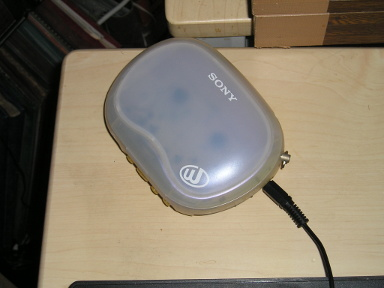
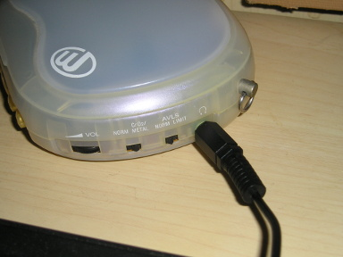
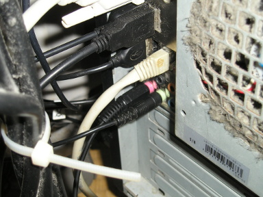

昔エアチェックした NHK Session '83 の伊藤君子さんと佐藤允彦トリオ ※1 のスタジオ・ライブを、カセットテープからパソコンに取り込んでみました。
すごいノイズですw スクラッチノイズの酷いのみたいですw 再生器の問題なんでしょうね。
※1 佐藤允彦 (Pf)、井野信義 (Bs)、日野元彦 (Ds) という超豪華メンバーです。今は亡き日野元彦さんのプレイが聴ける貴重な音源です。
ちなみにテープの再生に使ったのはこれ。
10 年以上前に購入していらい、ほとんど使っていないソニーのウォークマン。
ウォークマンのヘッドホン端子に接続コードを差し込んで
パソコンの入力端子に差し込む。
これだけですw それにしてもファンのあたりが汚いw
とここまで書きながら取り込んだ音源をチェックしていたら、ファイルが壊れていて、全部やりなおしにwww